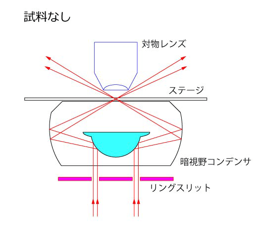

それは至極簡単です．
直接光を直接対物レンズに入射しないようにすればいいのです．
次の図は，反射ミラーを使って，直接光を直接対物レンズに入らないようにした光学系です．

光はいったん暗視野コンデンサ内で反射して，斜めにサンプルに照射します．
斜めと言っても，実際はリング状になりますが．
試料がない場合，光は斜めに抜けて，対物レンズには入射しません．
つまり，
真っ暗
な像しか見ることができません．
しかし，試料があると，試料による散乱は四方八方に広がり，そのうちの対物レンズのN.A.分が，対物レンズに入り，我々が見ることができるのです．
この，反射型暗視野コンデンサ，というのは正式名称ではありません．
次に述べる，レンズ型と区別をつけるために，私が勝手に名前をつけたものです．
どなたか，正式な名称をご存じの方は教えてください．
ここで，重要なのが，この光学系，明視野照明と全く一緒なのです．
つまり，
暗視野コンデンサをつけることにより暗視野照明になる
という簡単な操作で利用可能なのです．